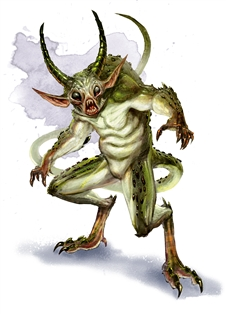

Quasit
Quasits infest the Lower Planes. Physically weak, they keep to the shadows to plot mischief and wickedness. More powerful demons use quasits as spies and messengers when they aren’t devouring them or pulling them apart to pass the time.
A quasit can assume animal forms, but in its true form it looks like a 2-foot-tall green humanoid with a barbed tail and horns. The quasit has clawed fingers and toes, and these claws can deliver an irritating poison. It prefers to be invisible when it attacks.